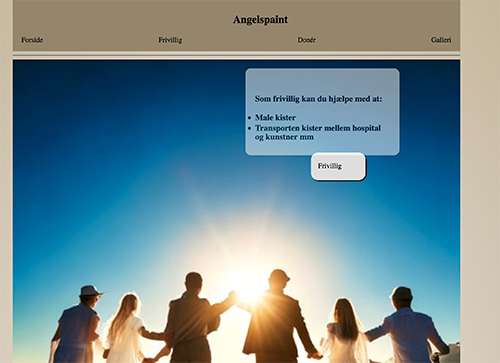
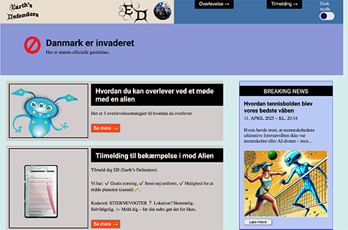

Tema 2-5: Grundlæggende Webudvikling, UX/UI, Animation og Redesign
På 1. semester har jeg arbejdet med fem temaer:
Jeg startede med grundlæggende webudvikling, hvor jeg lærte at strukturere og style hjemmesider med HTML og CSS samt arbejde med mobile-first-design. I tema 3 arbejdede jeg med UX/UI og brugte Figma til at udvikle wireframes, prototyper og teste brugeroplevelser. Tema 4 handlede om animation og interaktivitet med JavaScript, og i det sidste tema redesignede vi en virksomhedshjemmeside med fokus på visuel identitet, AI-værktøjer, samarbejde i gruppen og versionsstyring gennem GitHub. Temaerne har givet mig en bred digital værktøjskasse og forståelse for både design og udvikling.
Tema 2
I tema 2 kodede jeg en mobilvenlig hjemmeside i HTML og CSS, og jeg lærte om struktur, layout, responsivt design og vigtigheden af en god mappestruktur.
Tema 3
I tema 3 arbejdede jeg med brugercentreret design. Jeg brugte Figma til at udvikle og teste layout, style tiles og interaktive prototyper samt skabte et galleri med hover-effekt.
Tema 4
I tema 4 skabte jeg et interaktivt website med animation og JavaScript. Jeg designede aliens i Illustrator, lavede interaktion via klik og lærte at kombinere design, kode og brugeroplevelse.
Tema 5
Tema 5 var fokus på redesign af eksisterende hjemmesider med fokus på UX, visuel identitet og brugervenlighed - og herunder AI-illustrationer, egne fotos, brugertests, Figma-design, Trello-planlægning og GitHub-samarbejde.